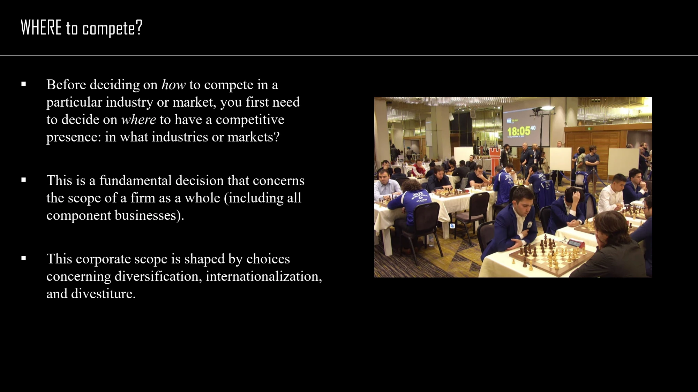

The framework
| Dimension | What it covers | Typical strategic change |
|---|---|---|
| Horizontal | The range of industries or product markets in which the company participates. | Entering or leaving a different business area. |
| Vertical | The stages of the value chain performed inside the company. | Moving upstream into inputs or downstream toward distribution and customers. |
| Geographical | The geographical markets the company serves. | International expansion, concentration or withdrawal. |
Key distinctions
Industry and product market
An industry groups firms engaged in similar production and competition. A product market groups offers with similar characteristics, performance, intended use and price. Depending on the context, a product market may coincide with an industry, sit within one or span several industries. Set the definition before counting businesses.
State versus action
Diversification can describe the current state of a firm's business portfolio or the act of entering an area outside its existing scope. Internationalization has the same distinction: current foreign participation versus the process of geographical expansion.
Strategy levels
Corporate strategy asks where the firm participates and how ownership and coordination add value. Competitive strategy asks how a particular business competes within its market. A portfolio choice and a pricing choice therefore belong to different analytical levels, even when they interact.
How to use it
- Map the current company along all three dimensions.
- Specify exactly which dimension a proposal changes.
- Explain how the new perimeter would improve overall value creation.
Keep in mind
A definition that is too broad can overwhelm the analysis; one that is too narrow can exclude important competitors or activities.
What is the difference between vertical and horizontal scope?
Reveal the explanation
Vertical scope concerns stages of a chain; horizontal scope concerns the range of different businesses or product markets.
Read the classroom original
Complete pages from the supplied lecture slides. Select a page to read, enlarge or browse its extracted text. Page numbers refer to the PDF’s physical page order.

 SESSION 3 · PAGE 11
SESSION 3 · PAGE 11Three dimensions of scope
 SESSION 3 · PAGE 12
SESSION 3 · PAGE 12Industries and markets
 SESSION 3 · PAGE 13
SESSION 3 · PAGE 13Defining an industry
 SESSION 3 · PAGE 15
SESSION 3 · PAGE 15Industry versus product market
 SESSION 3 · PAGE 16
SESSION 3 · PAGE 16Horizontal scope
 SESSION 3 · PAGE 17
SESSION 3 · PAGE 17Vertical scope
 SESSION 3 · PAGE 18
SESSION 3 · PAGE 18The extended value chain
 SESSION 3 · PAGE 21
SESSION 3 · PAGE 21Geographical scope
 SESSION 3 · PAGE 22
SESSION 3 · PAGE 22The corporate perimeter
 SESSION 4 · PAGE 3
SESSION 4 · PAGE 3Corporate and business-level decisions
 SESSION 4 · PAGE 4
SESSION 4 · PAGE 4A corporate strategy framework
 SESSION 4 · PAGE 6
SESSION 4 · PAGE 6